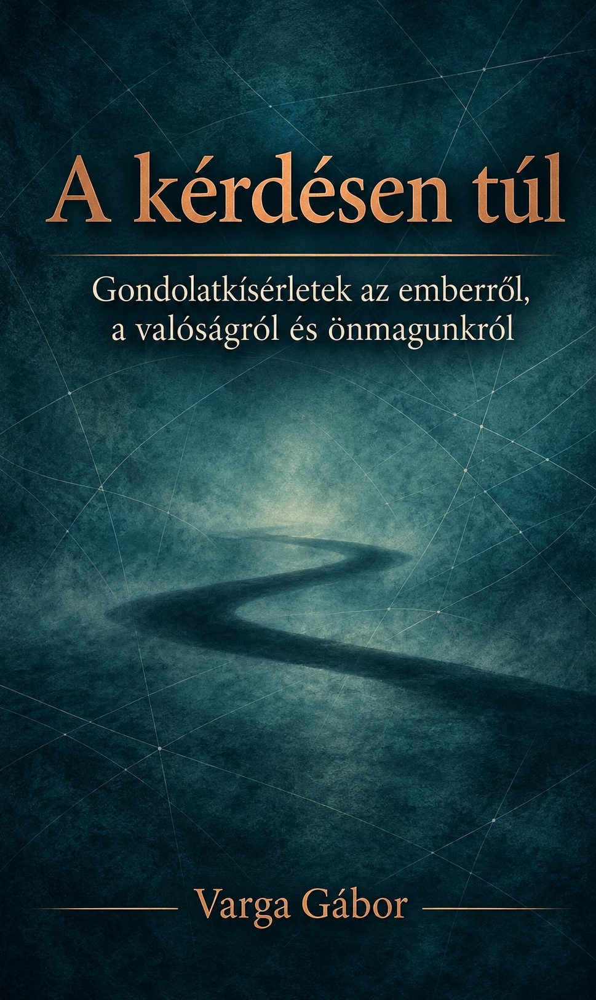

A kérdésen túl
Gondolatkísérletek az emberről,
a valóságról és önmagunkról
Mi történik, amikor ugyanaz a világ egyszer csak mást kezd jelenteni?
Fedezd fel a könyvet
A könyvről
Ismerős történetek.
Új felismerések.
Mítoszok, vallási szövegek, sci-fi történetek és hétköznapi helyzetek adják a könyv kiindulópontját.
Olvass bele